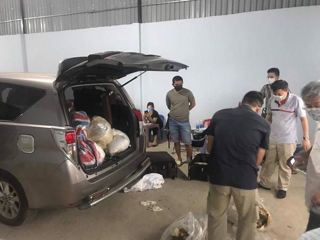
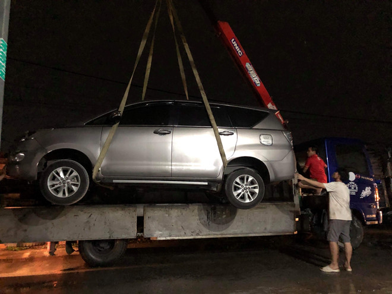

Bộ Công an bắt kho ma túy ketamine 500 tỷ ở Sài Gòn
Lực lượng thuộc Bộ Công an phối hợp cùng Công an TP.HCM khám xét các kho hàng của người Trung Quốc ở Bình Chánh thu giữ 500 kg ketamine.Cục cảnh sát ma túy (C04, Bộ Công an) phối hợp với nhiều đơn vị nghiệp vụ Công an TP.HCM đồng loạt ập vào khám xét các kho hàng tại xã Vĩnh Lộc A (huyện Bình Chánh) và các quận Tân Phú, Tân Bình, vào chiều 11/5.
Tại đây, cảnh sát phát hiện 500 kg ketamine (ma túy tổng hợp), 4 máy ép, nhiều ôtô. Nhà chức trách bắt giữ kẻ cầm đầu là Liu Ming Yang (34 tuổi) và hai người cùng quốc tịch Trung Quốc.
Theo cảnh sát, Yang chỉ đạo đàn em nhập cảnh vào Việt Nam để làm nhiệm vụ vận chuyển, tập kết ma túy. Yang cũng nhờ người tình là Nguyễn Thị Thu Vân (36 tuổi, ngụ tại Tân Phú) thuê kho hàng và làm nhiệm vụ phiên dịch.
Sau khi ma túy được chuyển trót lọt bằng xe Innova từ nước ngoài vào Việt Nam, Yang chỉ đạo đàn em đưa đến kho hàng do Vân thuê, ngụy trang thành hàng hóa để xuất đi nước thứ 3.
Ketamin là loại ma túy đá dạng hiếm nhất hiện nay trên thị trường và có ảnh hưởng mạnh lên hệ thần kinh gấp nhiều lần so với các loại ma túy khác.
Lô ketamin bị bắt giữ thuộc loại lớn nhất từ trước đến nay, giá trị ước tính hơn 500 tỷ đồng.
Chỉ trong 2 tháng qua, hàng loạt vụ bắt ma túy lớn đã diễn ra ở TP.HCM và một số địa phương.
Chiều 20/3, Bộ Công an ập vào kho xưởng ở quận Bình Tân bắt nhóm người buôn ma tý, thu giữ 300 kg ma túy đá. Mở rộng điều tra, Bộ Công an phối hợp với Philippines phát hiện một container chứa 276 kg ma túy được chở bằng đường biển.
Tối 27/3, Đội CSGT An Sương tuần tra, phát hiện xe bán tải có biểu hiện khả nghi. Cảnh sát kiểm tra, phát hiện 895 bánh heroin.
Trưa 12/4, Đội CSGT Công an quận 5 phát hiện 3 ôtô đỗ sai làn đường nên kiểm tra. Cảnh sát phát hiện 606 kg ma túy đá được ngụy trang trong các loa thùng. Qua truy xét, cảnh sát thu giữ tổng cộng hơn 1,1 tấn ma túy.
Sau nhiều vụ phát hiện, thu giữ lượng lớn ma túy, Công an TP.HCM đã xác định phương thức, thủ đoạn hoạt động của các đường dây buôn chất cấm. Theo nhận định của cảnh sát, kẻ điều hành chủ yếu là người gốc Hoa, mang hộ chiếu Đài Loan, Trung Quốc hoặc Malaysia. Họ chỉ nhập cảnh vào Việt Nam vài lần để thăm dò địa bàn. Còn người Việt Nam được thuê vận chuyển hàng cấm.
Sau khi đưa ma túy từ Lào, Thái Lan, Campuchia vào Việt Nam, những đường dây này thường chọn TP.HCM là điểm trung chuyển ma túy đi các nước thông qua đường biển. Ngoài ra, để qua mắt lực lượng chức năng, tội phạm thường ngụy trang ma túy vào trong các bao bì trà, cà phê, hạt nhựa, linh kiện điện tử, loa thùng. Địa điểm tập kết là các nhà xưởng thuê ngắn hạn từ 1-3 tháng hoặc những nơi kín đáo, được che chắn kỹ.
Với thủ đoạn được xác định như trên, công an đề nghị người dân có kho bãi, nhà xưởng cho thuê và các doanh nghiệp kinh doanh vận tải, xuất nhập khẩu, công nhân lao động cần nâng cao cảnh giác. Khi phát hiện những dấu hiệu nghi vấn cần báo ngay cho công an gần nhất, tuyệt đối không nên tự tiêu hủy tang vật nghi ma túy.